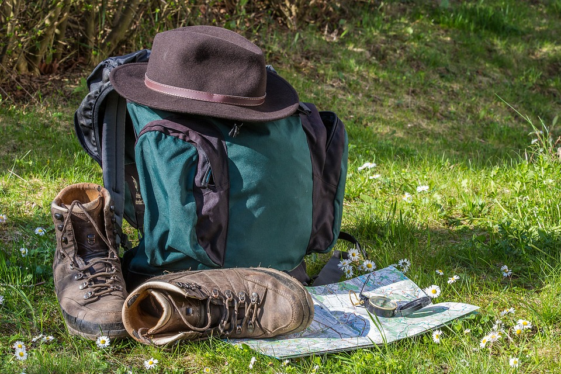

You decide to stay at the plane and hope for the best to keep shelter from your new enviornment. You see a trail of berries in the distance. Perhaps someone dropped them? Maybe they could be of help to you. However, you also see contents of a backpack that could possibly belong to someone. Which path do you choose to follow?
